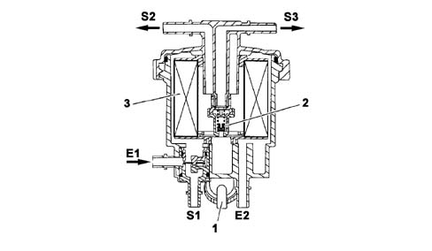
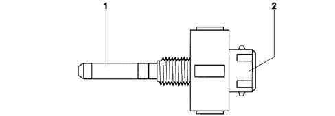

1044B FUEL FILTER
- Path
- Descriptions > 10 ENGINE > 1044 FUEL CIRCUIT PUMP/S AND DEVICES > 1044B FUEL FILTER
- Kind
- system description
- Applies to
- engines: 2.0 16V JTD, 2.2 16V JTD; all production periods
- Interactive page
- https://sloeber94.github.io/elrnDB-fUlss/en/#/179006597
Applies to: engines: 2.0 16V JTD, 2.2 16V JTD; all production periods
DESCRIPTION
The fuel filter is fitted in the engine bay on the bulkhead.
It is cartridge type with a filter element (1) consisting of a paper disc pack with a filtering level of 3 - 5 µm. The filter is equipped with a low pressure regulation valve.
There is a decanting device at the base of the cartridge on which a water in the fuel filter presence sensor is fitted.
The fuel filter also has a fuel pre-heating device.
Diagrammatic view of the fuel filter
Diagrammatic view of the fuel filter

1, Sensor to detect the presence of water in the fuel filter
2, Low pressure regulation valve
3, Filter element
E1, Fuel inlet from the tank | S1, Closed |
E2, Closed | S2, Fuel outlet to the high pressure pump |
S3, Fuel outlet to the tank (return circuit) |
LOW PRESSURE REGULATION VALVE
The valve, built-into the filter, consists of a ball pre-loaded by means of a calibrated spring.
When the fuel supply pressure, acting on the ball, is greater than the spring loading, some of the fuel is diverted to the tank via the return pipe.
WATER IN FUEL FILTER SENSOR
The water presence sensor is the resistive type, measuring the difference in resistance between water and diesel; it is fitted on the filter in place of the bleed screw.

1, Water presence sensor
2, Electrical connection